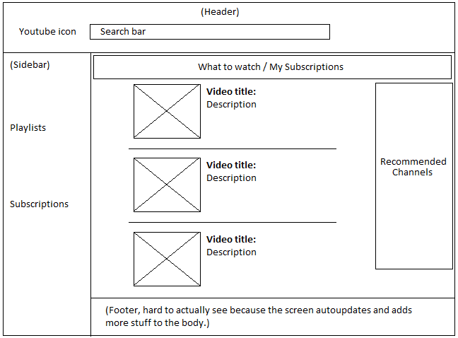
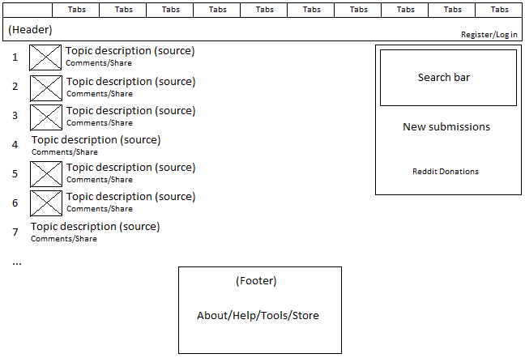
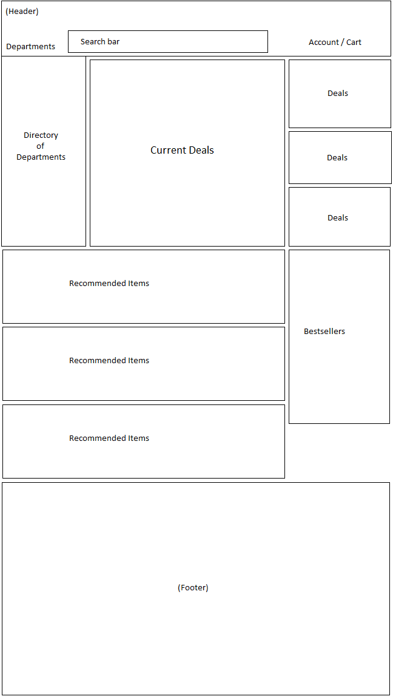

Pretty much all websites try to fulfill the following two specific tasks:
Task 1 is important because most users want to find what they're looking for as quickly as possible. If it takes too long for them to find something on one site, they will move on to another site. On the other hand, Task 2 is important because the owners of websites want people to stay on their sites for as long as possible, either to generate ad revenue or to increase the chances of a viewer buying something. A website can do this by suggesting other things that a viewer may be interested in.
I made a wireframe specifically of the youtube subscriptions page, since that's where I spend the most time on youtube. The search bar is readily accessible from any page, since most people want to search for things easily. While video links on the front page show only the thumbnails in a gallery format, the video links in the subscriptions page are shown as a list and includes a description. The recommended channels sidebar on the right side of the screen serves to point the viewer towards other channels.

Reddit's front page is laid out in a similar fashion as youtube's subscription page. While the front page shows the overall most popular posts on the site, the tabs on the top leads the viewer to specific subreddits (topics) that may contain more of what he's interested in. The search bar is placed in the top right side of the page rather than the header, in order to provide more space to show reddit posts.

The basis of amazon's design is similar to the previous two sites. The sidebar and header are used to direct the users towards what he's looking for, and the body of the site is used to show things that the user may be interested in, including advertisements for current deals on amazon, followed by recommended purchases based on current trends and the user's previous purchases.
